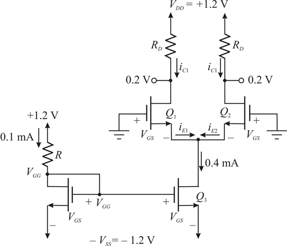

Step 1:
Refer to the circuit diagram in Figure P8.6 in the textbook.
When, the circuit becomes:

Figure 1
Step 2:
The gate-to-source voltage for all transistors is,
Drain voltages for is,
Gate voltages for is,
Threshold voltage is,
Overdrive voltage for all transistors is,
Trans-conductance parameter is,
Substitute for and  for in the equation.
for in the equation.
Therefore, the gate-to-source voltage for all transistors is,
Step 3:
Use Kirchhoff’s voltage law to the circuit, the gate-to-gate voltage becomes:
Substitute for and for in the circuit.
Therefore, the gate-to-gate voltage is,

Step 4:
Use Ohm’s law to find the resistor, value.
value.
Substitute for in the equation.
Therefore, the value of  is.
is.
The drain resistance for  and
and  is,
is,
Hence, the drain resistance for and is,
Step 5:
Use Ohm’s law to the circuit, the value of drain resistance becomes:
Substitute in the above equation.

Therefore, the value of drain resistance is
Step 6:
The width-to-length ratio can be obtained by using drain current formula.
The width-to-length ratio for  is,
is,

Substitute, , and in the equation.
The width-to-length ratio for is,
.
The width-to-length ratio for  is same as width-to-length ratio for
is same as width-to-length ratio for  because both are matched transistors. Therefore, the width-to-length ratio for
because both are matched transistors. Therefore, the width-to-length ratio for  is.
is.
Step 7:
The width-to-length ratio for is,
The width-to-length ratio for is,
.
Step 8:
The width-to-length ratio for is,
The width-to-length ratio for is,
.
Step 9:
The maximum common-mode voltage is,
Substitute  ,
, , and in the equation
, and in the equation
Therefore, the maximum common-mode voltage is,
Step 10:
The minimum common-mode voltage is,
Substitute  ,
, and in the equation.
and in the equation.
Therefore, the minimum common-mode voltage is
Therefore, the common-mode voltage rang is